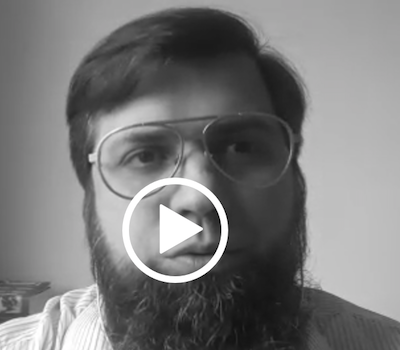
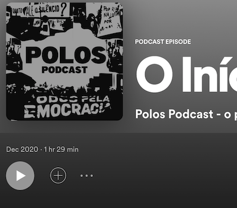

EIXOS
O observatório trabalha com metodologias quali-quantitativas
estruturadas em seis eixos norteadores e três eixos transversais conforme abaixo
Dados
Encontre dados organizados sobre políticas públicas
centralizados no link repositório ou divididos em tabelas, gráficos e mapas
VÍDEOS
Acompanhe a produção em vídeo da
série Vida nas Ruas produzida pela Rede Minas e UFMG
Entrevistas
Siga as entrevistas que estão relacionadas com políticas
públicas e populações socioeconomicamente vulnerabilizadas

Acolhimento de Pessoas
Entrevista com o professor Dr. André Luiz Freitas Dias sobre acolhimento de pessoas e equipamentos públicos

O Início da Transversalidade
O sonho da fundação de um programa transdisciplinar é narrado por professores e pesquisadores
Pessoas em Situação de Rua
Entrevista com pesquisadores e profissionais que trabalham com o fenômeno da população em situação de rua
Empreendimentos
O Programa Polos de Cidadania entrevista pessoas afetadas pelo trágico episódio de Brumadinho
Contato
Endereço
Av. João Pinheiro, 100
Prédio 1 | 6º andar | Centro
[Faculdade de Direito UFMG] 30130-180 Belo Horizonte, MG
Telefone
+55 31 3409-8676
administrativo@polosdecidadania.com.br